Setup DynamoDB DAX
DynamoDB Accelerator (DAX) is a fully managed, highly available, in-memory cache for DynamoDB that delivers up to 10x performance improvement. In this step, we’ll create a DAX cluster to provide microsecond-latency access to our ProductCatalog table.
DAX Architecture Overview
DAX provides:
- Microsecond latency for cached reads
- Write-through caching for consistency
- Automatic cache management with TTL
- Multi-AZ deployment for high availability
Step 1: Create DAX Subnet Group
Navigate to DAX Console
-
In the DynamoDB Console, click DAX in the left navigation
-
Click Subnet groups in the left menu
-
Click Create subnet group
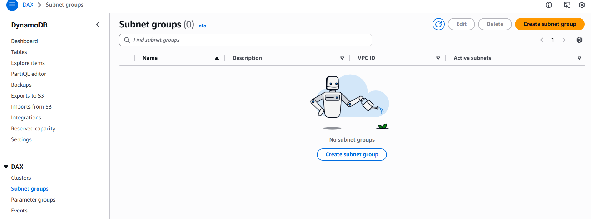
Configure Subnet Group
-
Enter subnet group details:
- Subnet group name:
dax-subnet-group - Description:
Subnet group for DAX cluster - VPC ID: Select your
caching-workshop-vpc
- Subnet group name:

- Select availability zones and subnets:
- Choose both private subnets from different AZs
- This ensures high availability for the DAX cluster
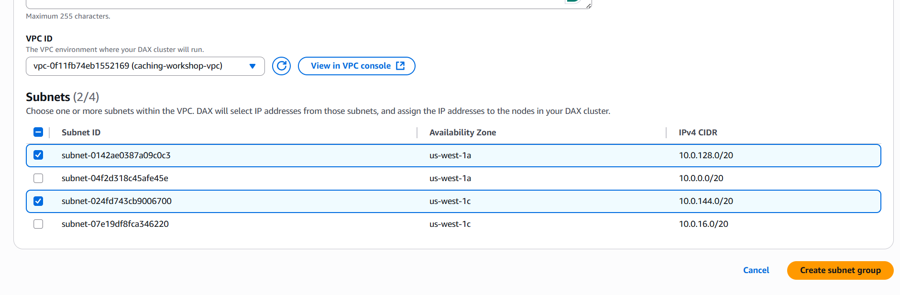
- Click Create subnet group
Step 2: Create IAM Role for DAX
Navigate to IAM Console
- Open the IAM Console in a new tab
- Click Roles → Create role

Configure Role
- Select trusted entity:
- Trusted entity type: AWS service
- Service: DynamoDB Accelerator (DAX)
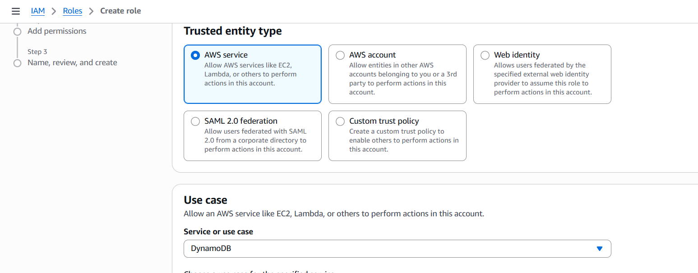
- Click Next
Attach Permissions
- Search for and select the following policies:
- AmazonDynamoDBFullAccess (for workshop purposes)
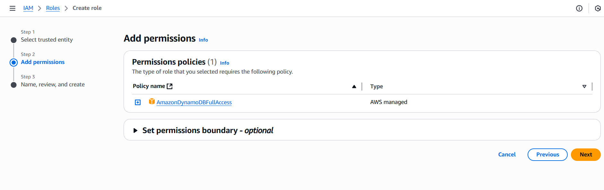
In production, use more restrictive policies following the principle of least privilege. Create custom policies that only allow access to specific DynamoDB tables.
- Click Next
Name and Create Role
- Configure role details:
- Role name:
DAXServiceRole - Description:
Service role for DynamoDB DAX cluster
- Role name:
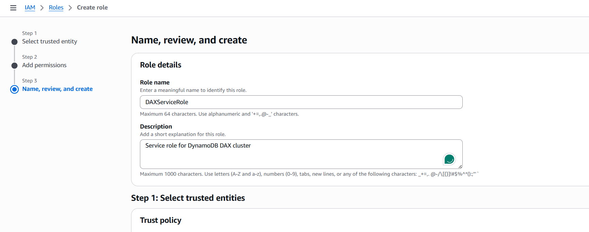
- Click Create role
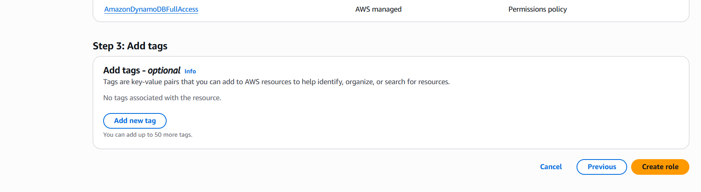
Step 3: Create DAX Parameter Group (Optional)
Navigate to Parameter Groups
- Return to the DAX Console
- Click Parameter groups in the left menu
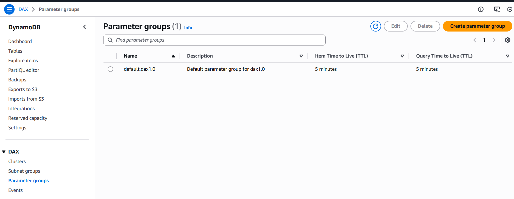
- Click Create parameter group
Configure Parameter Group
- Enter parameter group details:
- Parameter group name:
dax-custom-params - Description:
Custom parameters for DAX cluster
- Parameter group name:
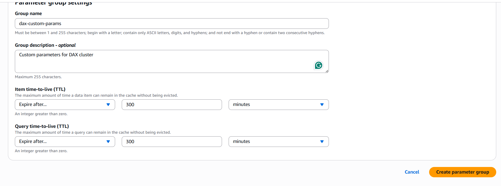
- Click Create
For this workshop, we’ll use default parameters. In production, you might want to tune parameters like query-ttl-millis and record-ttl-millis.
Step 4: Create DAX Cluster
Start Cluster Creation
- Click Clusters in the left navigation
- Click Create cluster
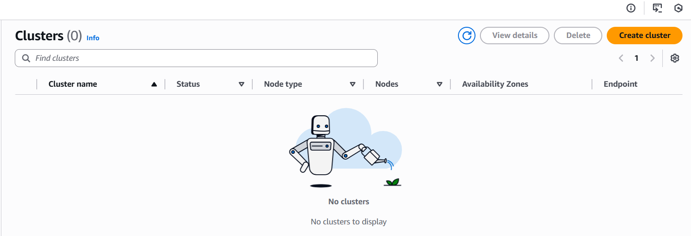
Step 1: Choose Cluster Nodes
-
Enter cluster configuration:
- Cluster name:
product-dax-cluster - Description:
DAX cluster for product catalog caching - Node type:
dax.t3.small - Cluster size: 3 nodes
- Cluster name:
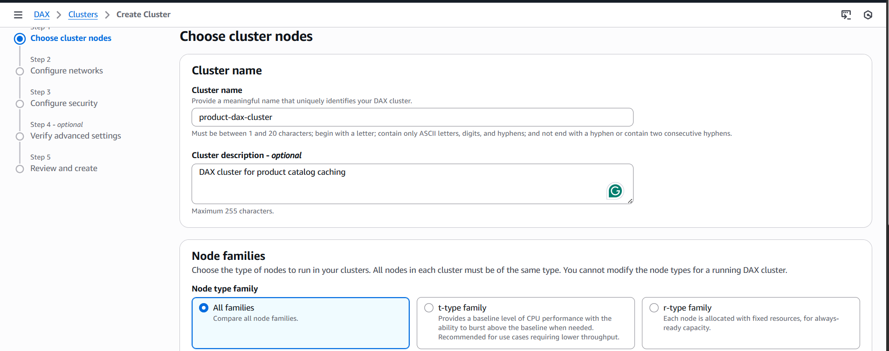
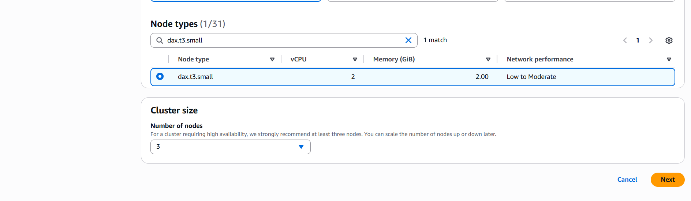
3 nodes provide high availability across multiple AZs. For production workloads, consider larger node types based on your memory and throughput requirements.
- Click Next
Step 2: Configure Networks
-
Configure VPC settings:
- VPC ID: Select
vpc-xxxxxxxxx (caching-workshop-vpc) - The VPC environment where your DAX cluster will run
- VPC ID: Select
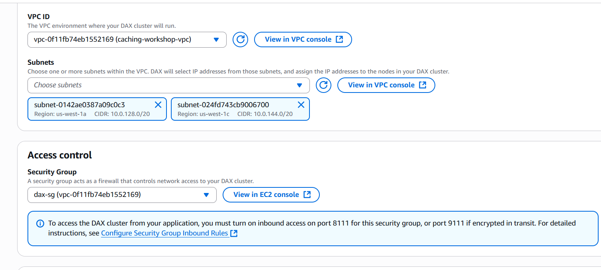
-
Configure subnets:
- Subnets: Click Choose subnets
- Select both private subnets from different AZs
- DAX will select IP addresses from those subnets and assign them to cluster nodes
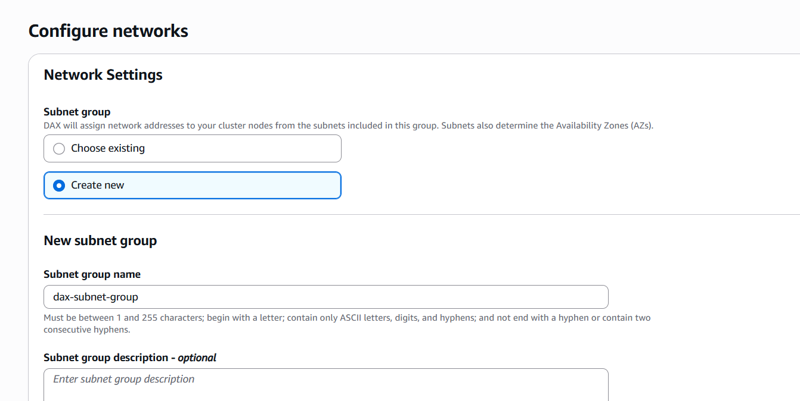
-
Configure access control:
- Security Group: Select
dax-sg(replace default security group) - A security group acts as a firewall that controls network access to your DAX cluster
- Security Group: Select

- Click Next
Step 3: Configure Security
-
Configure IAM service role:
- IAM service role: Select
DAXServiceRole - This role allows DAX to access DynamoDB on your behalf
- IAM service role: Select
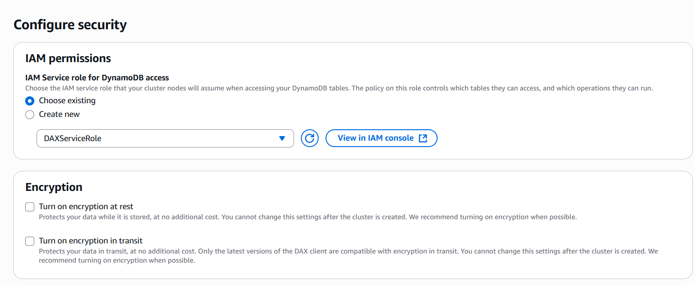
- Configure encryption settings:
- Cluster endpoint encryption: Disabled (for workshop)
- Encryption at rest: Disabled (for workshop)
In production environments, always enable encryption in transit and at rest for security compliance.
- Click Next
Step 4: Verify Advanced Settings (Optional)
- Configure advanced settings:
- Parameter group:
default.dax1.0 - Maintenance window: No preference
- Notification topic: None
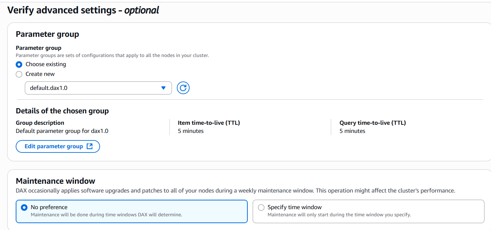
- Click Next
Step 5: Review and Create
- Review all cluster settings:
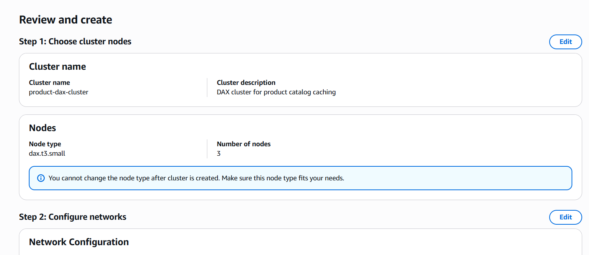
-
Verify:
- Cluster name and description
- Node type and count
- VPC and subnet configuration
- Security group and IAM role
- Encryption settings
-
Click Create cluster
Step 5: Review and Create Cluster
Review Configuration
- Review all cluster settings:
- Verify:
- Cluster name and description
- Node type and count
- Network configuration
- Security settings
Create Cluster
- Click Create cluster
DAX cluster creation takes 10-15 minutes. The cluster will show “Creating” status during this time.
Step 6: Note Cluster Endpoints
Cluster Endpoint
- Note the Cluster endpoint for application configuration:
product-dax-cluster.xxxxxx.dax-clusters.us-east-1.amazonaws.com:8111
Node Endpoints
- Individual node endpoints are also available for direct access:
Step 7: Test DAX Connectivity
Launch Test Instance
-
Launch a temporary EC2 instance in your private subnet to test DAX connectivity:
- AMI: Amazon Linux 2023
- Instance type: t3.micro
- Subnet: One of your private subnets
- Security group:
app-sg
Install DAX Client
- Connect to your test instance and install the DAX client:
# Update system
sudo yum update -y
# Install Node.js for testing
curl -o- https://raw.githubusercontent.com/nvm-sh/nvm/v0.39.0../../install.sh | bash
source ~/.bashrc
nvm install 18
nvm use 18
# Install DAX client
npm install amazon-dax-client aws-sdk
Test DAX Connection
- Create a test script to verify DAX connectivity:
// test-dax.js
const AmazonDaxClient = require('amazon-dax-client');
const AWS = require('aws-sdk');
// Configure AWS region
AWS.config.update({region: 'us-east-1'});
// Create DAX client
const daxClient = new AmazonDaxClient({
endpoints: ['product-dax-cluster.xxxxxx.dax-clusters.us-east-1.amazonaws.com:8111'],
region: 'us-east-1'
});
// Test function
async function testDAX() {
try {
const params = {
TableName: 'ProductCatalog',
Key: {
ProductID: 'PROD001',
Category: 'Electronics'
}
};
console.log('Testing DAX connection...');
const result = await daxClient.get(params).promise();
console.log('✅ DAX connection successful!');
console.log('Product data:', JSON.stringify(result.Item, null, 2));
} catch (error) {
console.error('❌ DAX connection failed:', error);
}
}
testDAX();
- Run the test:
node test-dax.js
Step 8: Configure CloudWatch Monitoring
Enable Enhanced Monitoring
-
In the DAX cluster details, go to the Monitoring tab:
-
Key metrics to monitor:
- CPUUtilization: CPU usage across nodes
- NetworkBytesIn/Out: Network traffic
- GetItem/Query/Scan requests: Operation counts
- ItemCacheHits/Misses: Cache effectiveness
Step 9: Document DAX Configuration
Record the following information for application configuration:
DAX Cluster Information
- Cluster Name:
product-dax-cluster - Cluster Endpoint:
product-dax-cluster.xxxxxx.dax-clusters.us-east-1.amazonaws.com:8111 - Node Type:
dax.t3.small - Node Count: 3
- Security Group:
dax-sg - Subnet Group:
dax-subnet-group
Performance Characteristics
- Cache Hit Latency: Microseconds
- Cache Miss Latency: Single-digit milliseconds
- Throughput: Up to 1 million requests per second
- Cache TTL: Configurable (default: 5 minutes for queries)
IAM Role
Troubleshooting Common Issues
Issue: DAX Cluster Creation Fails
Possible Causes:
- Insufficient subnet group configuration
- IAM role permissions issues
- Security group misconfiguration
Solutions:
- Verify subnet group has subnets in multiple AZs
- Check IAM role has DynamoDB permissions
- Ensure security group allows port 8111
Issue: Cannot Connect to DAX
Possible Causes:
- Security group blocking traffic
- Incorrect endpoint configuration
- Network connectivity issues
Solutions:
- Verify security group allows inbound traffic on port 8111
- Check DAX endpoint URL and port
- Ensure client is in same VPC as DAX cluster
Issue: Poor Cache Performance
Possible Causes:
- Inappropriate node size
- High cache miss ratio
- Network latency
Solutions:
- Monitor CloudWatch metrics for bottlenecks
- Consider larger node types for memory-intensive workloads
- Optimize query patterns for better cache utilization
Performance Optimization Tips
Cache Effectiveness
- Query Patterns: Design queries to maximize cache hits
- TTL Configuration: Balance freshness vs. performance
- Node Sizing: Choose appropriate memory for your dataset
Monitoring Best Practices
- Set up CloudWatch alarms for high CPU or low cache hit rates
- Monitor network utilization to identify bottlenecks
- Track error rates to identify connectivity issues
Next Steps
Your DynamoDB DAX setup is now complete! You have:
✅ DAX Cluster with 3 nodes across multiple AZs
✅ Subnet Group configured for private network access
✅ IAM Role with appropriate DynamoDB permissions
✅ Security Group allowing application access
✅ CloudWatch Monitoring enabled for performance tracking
✅ Connectivity tested and verified
DAX Benefits Achieved:
- Microsecond latency for cached DynamoDB operations
- Automatic cache management with write-through consistency
- High availability with multi-AZ deployment
- Seamless integration with existing DynamoDB APIs
DAX is transparent to your application - you can use the same DynamoDB SDK calls, and DAX will automatically cache the results for faster subsequent access.
Next, we’ll set up ElastiCache Redis for application-level caching to create our complete multi-layer caching architecture.